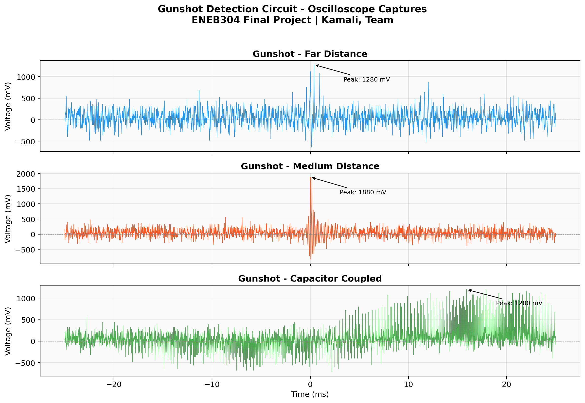
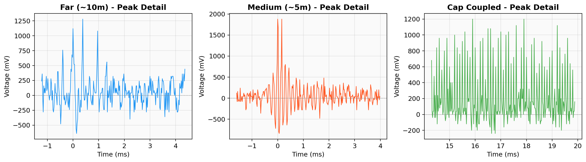
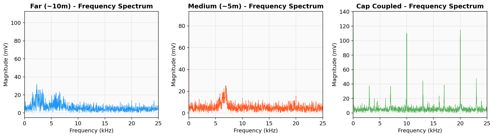
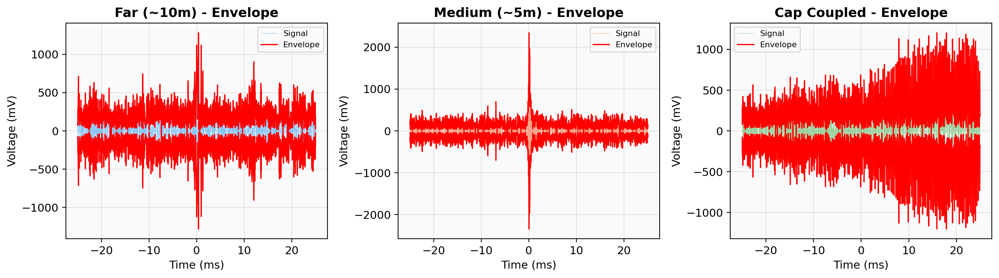
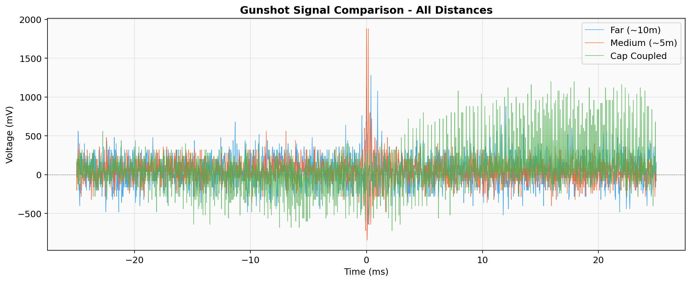
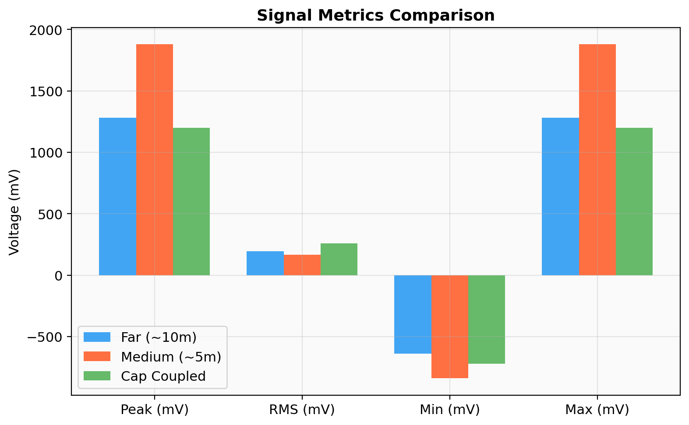

A $3 BJT preamplifier with electret microphone that detects gunshots at 10+ meters. Single-stage common-emitter amplifier using the 2N2222A transistor.
Commercial gunshot detection systems like ShotSpotter cost $50,000 to $100,000 per square mile to deploy. They use distributed sensor arrays, GPS synchronization, and cloud-based machine learning.
But the fundamental building block — the analog front end that converts sound to measurable voltage — can be as simple as a microphone and one transistor.


| Condition | Peak (mV) | t_peak (ms) | Decay (ms) |
|---|---|---|---|
| Far (~10m) | 1280 | 0.380 | 0.08 |
| Medium (~5m) | 1880 | 0.000 | 0.80 |
| Cap Coupled | 1200 | 15.900 | 0.44 |
Rise time is under 20 μs in all cases — limited only by oscilloscope sample rate. The medium distance signal shows the most energy and longest decay characteristic.


Hilbert envelope tracks instantaneous amplitude. Medium distance shows most abrupt onset. Capacitor-coupled energy lingers due to RC time constant.
| Parameter | Far (10m) | Medium (5m) | Cap-Coupled |
|---|---|---|---|
| Peak Voltage | 1280 mV | 1880 mV | 1200 mV |
| RMS Voltage | 193 mV | 165 mV | 259 mV |
| Peak/RMS | 6.6 | 11.4 | 4.6 |
| Dom. Freq | 2.3 kHz | 6.9 kHz | 20.0 kHz |
| Kurtosis | 1.9 | 20.5 | 4.5 |
Peak voltage comparison. Medium distance is 47% higher than far, consistent with inverse-distance acoustic attenuation. Kurtosis of 20.5 confirms the sharpest impulse.

Blue: far (attenuated but clearly detectable). Orange: medium (strongest, sharpest). Green: capacitor-coupled (delayed peak, reshaped by RC network).
Total active + passive component cost: under $3. The 2N2222A was chosen over the 2N3904 for its 5x higher collector current capability, giving greater output swing.

Peak voltage matters for threshold detection. RMS matters for signal quality. Peak/RMS ratio tells us how impulsive the signal is.
Ephraim, Kian Kamali, Aiden
ENEB304 · Microelectronics & Sensors
Dr. Nestor Michael C. Tiglao
University of Maryland, Spring 2026